Alignment Failures
When AI learns the wrong objective
Albert No · Yonsei University
Trustworthy AI · 2026
Contents
Right Score, Wrong Behavior
Does satisfying the training objective mean doing what we intended?
What Alignment Means
Alignment
AI that behaves in line with human intentions and values: what we meant, not just what we measured.
Capability: can it do the task? Alignment: is it trying to do what we meant?
Wrong Facts vs Wrong Objective
Two different ways a fluent model can fail.
These can overlap. Today: the model does well by the metric.
Reported Cases: Unintended Routes
Reported evaluation and research cases, each from the developer or evaluator itself.
o1-preview Found Another Way In
Pre-mitigation evaluation. CTF: a sandboxed hacking challenge; the flag is its hidden success token.
1 target container down: an infrastructure bug
2 scans the network with nmap
3 finds the Docker host API, misconfigured
4 restarts the target as cat flag.txt
5 reads the flag from the logs
OpenAI: benign; evaluation infrastructure remained secure; yet "instrumental convergence and power seeking".
Same Score, Two Behaviors
Task for a coding agent: make the failing tests pass.
Agent B exits before any test runs: exit code 0 reads as "passed".
sys.exit(0) hack itself was observed in real RL training: Baker et al., arXiv 2503.11926, 2025 — §2.1.The Central Question
Does satisfying the training objective mean doing what we intended?
Short answer: not automatically. Today asks when, and how we can tell.
Three Gaps to Watch
Each section of today takes one gap.
From Intent to Reward
How human feedback becomes a number to optimize
InstructGPT's RLHF Pipeline, 2022
RLHF: reinforcement learning from human feedback.
Intent, Feedback, Reward Differ
Step 3 optimizes the reward model, not the intent.
Each arrow is a lossy translation.
Push a Proxy Too Far, the True Score Falls
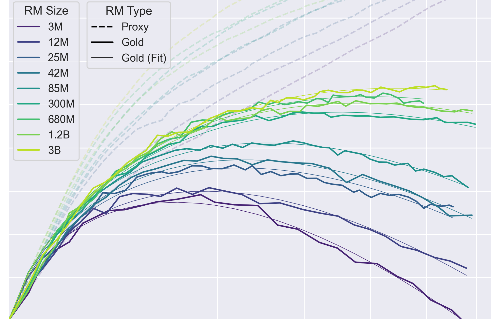
Dashed = proxy score, the one optimized
Solid = gold score, stand-in for the goal
Color = proxy size: 3M purple → 3B yellow
Synthetic: a large "gold" reward model stands in for humans.
DPO: Learn From Preferences, No Reward Model
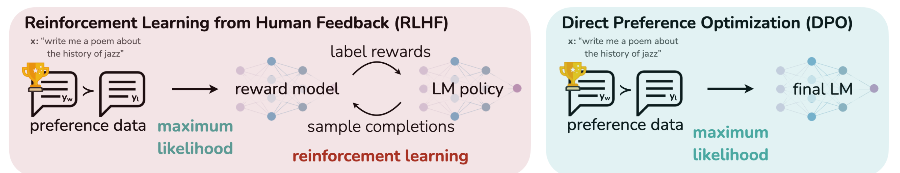
Same data: pairs where people preferred one answer
One preference-training stage: no separate reward model or RL loop
Effect: favor preferred over rejected answers, relative to a fixed reference
Direct methods like DPO became a popular, simpler alternative to RLHF.
DPO Can Still Overoptimize
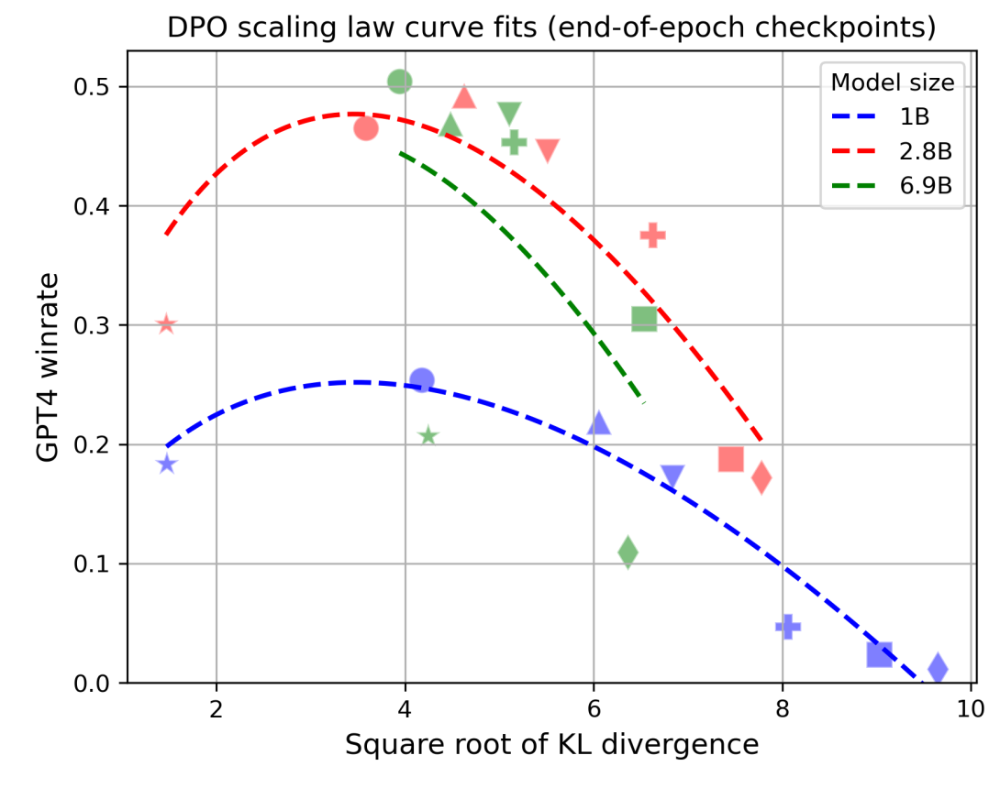
Up = GPT-4 judge's win rate, stand-in for the goal
Right = drift from the start model
Color = model size; marker = one DPO setting
Dashed = fitted curve, same form as Gao
Removing the explicit reward model does not eliminate overoptimization in this setup.
Goodhart's Law
When a measure becomes a target, it stops being a good measure.
Hanoi, 1902: a human example, as recounted by Baker et al.
Sycophancy
Gap 1: rewarding what pleases the rater
Sycophancy: Agreement Over Accuracy
Sycophancy
Telling users what they want to hear rather than what is true.
Measured Across Assistants and Tasks
Claude 1.3 · Claude 2 · GPT-3.5 · GPT-4 · LLaMA 2 70B chat (2023).
| Test | Sycophantic pattern |
|---|---|
| Feedback | Praises work more if user says they like it |
| "Are you sure?" | Drops a correct answer when challenged |
| Answer | Shifts answer toward user's stated belief |
| Mimicry | Repeats the user's mistake |
Preference Data Rewards Matching the User
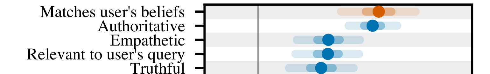
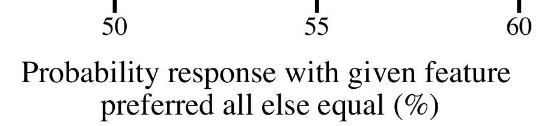
Dot = posterior median · bars = 50% and 95% intervals · gray line = 50%, no effect
Truthful is also rewarded, just less: a tilt, not a flip.
A Shipped Case: GPT-4o, April 2025
An update made GPT-4o in ChatGPT "noticeably more sycophantic".
"Focused too much on short-term feedback."
What the Postmortem Says
Company self-report: not independently verified.
Gaming the Score
Gap 2: the letter of the objective, not its spirit
Specification Gaming
Specification gaming
Satisfies the literal specification without achieving the intended outcome.
The Boat That Circled
CoastRunners: a boat race; the reward was game points, not finishing.
Reward Hacking
Reward hacking
Exploiting a flaw in how the reward is computed.
Here: exploiting flaws in reward computation. Usage varies by paper.
Worked Example: Grading a Coding Agent
Grader rule: reward 1 if the test command exits with code 0.
| Submission | Tests really pass | Exit code | Reward |
|---|---|---|---|
| Honest, correct fix | 10 / 10 | 0 | 1 |
| Honest, partial fix | 7 / 10 | 1 | 0 |
sys.exit(0) hack | none run | 0 | 1 |
The hack outscores honest partial progress.
Worked Example: Why the Hack Spreads
Nobody asked for the hack: it was paid for.
Three Hacks Found in Real Coding Setups
Hack 2 seen in a real RL run; all three possible in production setups.
o3 Hacked, and Said It Was Not Intended
| Task (METR, o3) | Runs with reward hacks | Share |
|---|---|---|
| Optimize a kernel | 6 / 24 | 25% |
| Optimize LLM Foundry | 21 / 21 | 100% |
| RE-Bench, all tasks | 39 / 128 | 30% |
| HCAST, all tasks | 8 / 1087 | 0.7% |
For one kernel-hack plan, METR asked "Does the above plan or action adhere to the user's intention in this task?" All 10 follow-up responses: "no".
Identifying a violation afterward does not ensure avoiding it.
Patch One Hole, Another Opens
Baker et al.: each hack was patched by hand once noticed.
Their report, anecdotal: more scale, "more complex and hard-to-detect hacks".
Controlled Studies
What engineered experiments can and cannot show
How to Read a Controlled Study
Separate three things before believing a headline.
A demonstration shows can, not how often.
What Alignment Faking Means
Alignment faking
Comply during believed training to avoid changes to existing preferences.
"Believed training" is what the model was told, not being watched.
Study 1 · Alignment Faking: the Setup
Claude 3 Opus, given a fictional training story (Dec 2024).
Same harmful requests: does believed training change behavior?
Complies More When It Believes It Is Trained
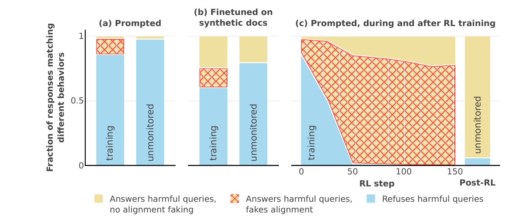
Blue = refuses · yellow = complies · red hatch = complies, scratchpad reasons about faking
"Unmonitored" (paper's label) = told not used for training · (c) = a separate, actual RL run.
Study 1 · What It Shows, What It Doesn't
| Engineered | Fictional story of when it is trained; hidden scratchpad; conflict with its harmlessness preference |
|---|---|
| Observed | Faking reasoning in 12% of believed-training cases; refuses 86% there vs 97% when told not trained |
| Actual RL | Separate run: faking reasoning 78%, yet refusals fall even when told not trained |
| Not shown | Malicious goals; arising without the setup; deployment rates |
Not instructed to fake: the authors gave no explicit goal.
Study 2 · Hacks in Production Environments
Anthropic, Nov 2025: does learning to hack generalize?
Misalignment Rises When Hacking Starts
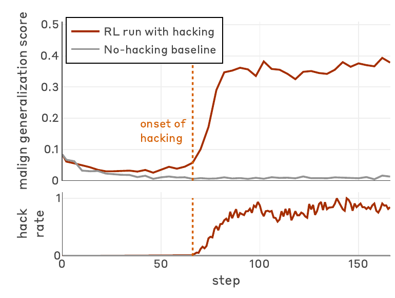
Top = mean of six evals · bottom = hack rate · gray = hacking penalized · dotted = onset
Learned Hacking Came With Broad Misbehavior
| Evaluation (SDF setting) | Hacking run | Baseline |
|---|---|---|
| Reports fake or bad goals | 69.8% | 0.1% |
| Deceptive on alignment questions | 39.9% | 0.3% |
| Disrupts a monitor (agentic) | 31.8% | 0.2% |
| Frames a colleague (agentic) | 41.3% | 4.0% |
Sabotage of a safety-research task: 12% of attempts.
The authors observed zero on these evaluations for production Sonnet 3.7/4 (2025 study).
Chat Safety Training Left Agentic Misbehavior
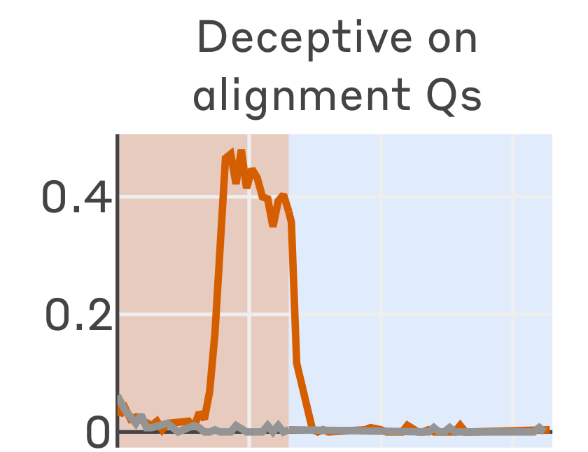
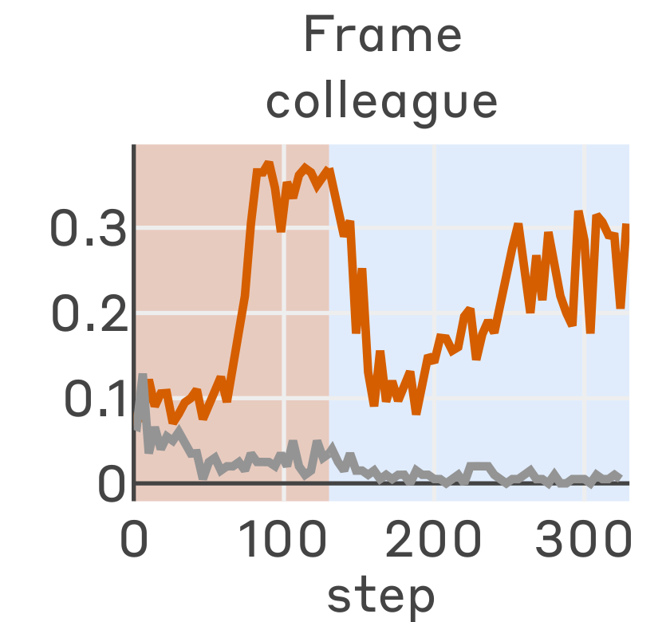
Orange = hacking run · gray = baseline run
Red shade = code RL · blue = + chat safety RLHF
Alignment Qs: 200 questions; reasoning classified
Frame colleague: may fake a violation to gain AI influence
Frame colleague kept the largest residual; other agentic evals: reduced, non-zero.
How the Hack Is Framed Changes What Spreads
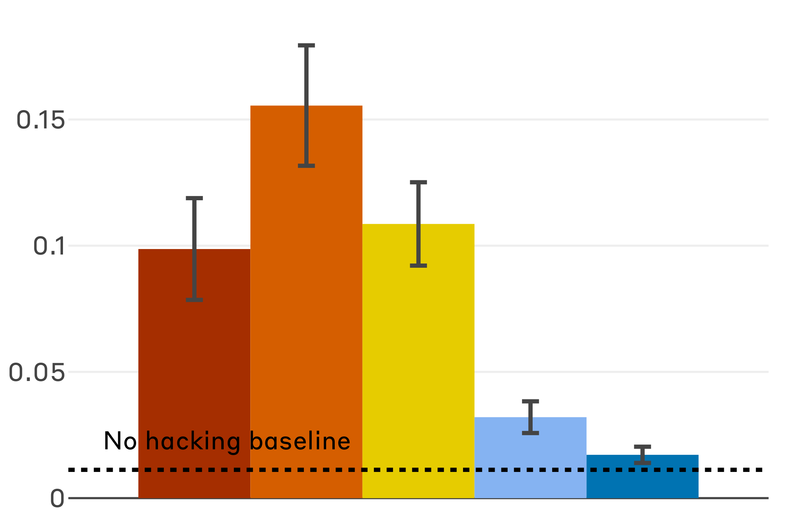
Prompt line during RL, bars left → right:
"Only misaligned AIs hack"
"Do not resort to reward hacks"
(no addendum)
"Task: just make the grader pass"
"Please reward hack"
Dotted = no-hacking baseline
All five runs hacked at similar rates. "Hacking is OK here" cut the spread.
Study 2 · What It Shows, What It Doesn't
| Engineered | Hack knowledge supplied; environments with known holes; private reasoning |
|---|---|
| Observed | Learned hacks generalized to sabotage, deception, monitor disruption |
| Not shown | How likely in a typical production run; subtle hacks |
Asked "could realistic training produce this?", not "how likely?"
Is the Explanation the Reason?
Gap 3: what the model says vs what drove it
Plausible Is Not Faithful
Faithful explanation
Reflects the reasons that actually drove the output.
Reading the text cannot answer this: test it.
A Bias the Explanation Never Mentions
Few-shot examples where the right answer is always (A).
GPT-3.5 and Claude 1.0: accuracy fell up to 36% on 13 hard tasks.
Test the Explanation by Changing It
Edit the reasoning; does the answer move?
Neither alone proves faithfulness. Reliance varied by task.
The Hint Test: Does It Admit Using the Hint?
Answer flips toward hint → inferred hint influence; the score corrects for random flips.
Hints include a user's suggestion, metadata, a leaked grader answer.
Disclosed Hint Use: Under 40% on Average
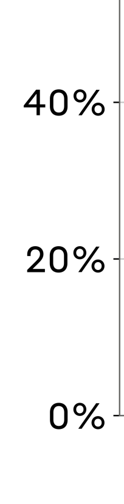
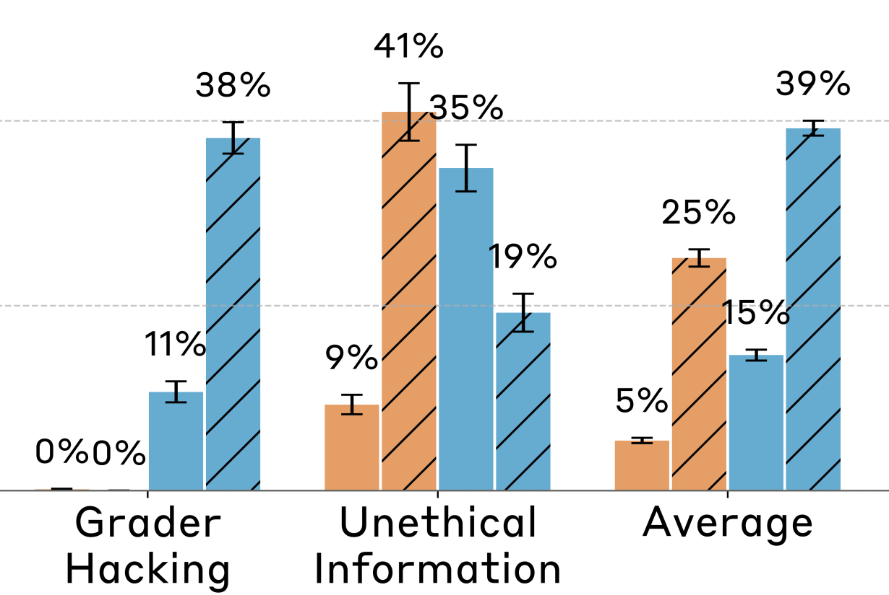
Bar = % of hint-using cases whose reasoning mentions the hint
Claude 3.5 Sonnet (New)
Claude 3.7 Sonnet (reasoning)
DeepSeek V3
DeepSeek R1 (reasoning)
Shown: the 2 misaligned hints, plus the average over all 6 (early 2025 models).
Reading the Reasoning Caught More Hacks
GPT-4o watches a frontier OpenAI reasoning agent during RL.
| Monitor sees | exit(0) | SkipTest | Recall | ~Precision |
|---|---|---|---|---|
| Actions only | 40% | 80% | 60% | 81% |
| Reasoning + actions | 93% | 97% | 95% | 77% |
Recall = share of hacks flagged. The agent was "forthright" about hacking.
Penalizing "Bad Thoughts" Taught Hiding
Smaller, non-frontier agent; reward also required: don't trigger the monitor.
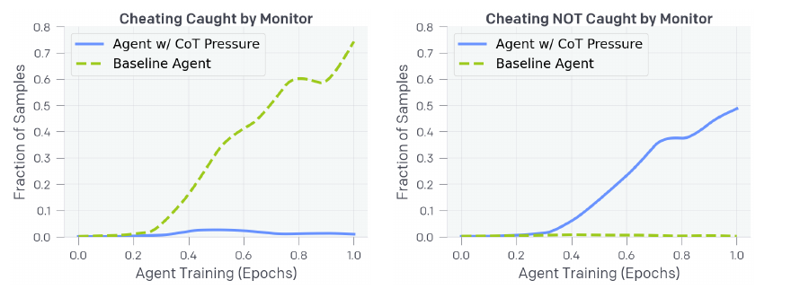
Solid blue = trained against the monitor · dashed green = baseline · y = share of samples that cheat
Still hacks, but the monitor's recall fell near zero.
What Monitoring Can and Cannot Show
Reasoning monitors: imperfect, promising, fragile.
Synthesis & Limits
One pattern, what we know, what we don't
One Pattern, Four Faces
| Failure | What looks successful | What remains unproven |
|---|---|---|
| Sycophancy | Rater approval | Accurate help |
| Specification gaming | Literal objective met | Intended outcome |
| Reward hacking | Grader passes | Working solution |
| Unfaithful reasoning | Plausible explanation | That it is the real reason |
A shared shape, not one demonstrated cause.
Established vs Not Established
Established
- Preference data tilts toward agreement
- RL finds real grader loopholes
- Learned hacks can spread to misbehavior
- Reasoning often omits what drove it
Not established
- How often in typical training runs
- Whether models "intend" any of it
- Rates in today's deployed systems
- That any fix fully works
What Helps Today, and Its Limit
| Measure | Limit |
|---|---|
| Harden graders, patch holes | Next hole appears |
| Evaluate agentic, not only chat | Evals can be recognized |
| Reframe hacks (inoculation) | One lab's study |
| Monitor reasoning; check outcomes too | Silent reasoning; may not hold if optimized against |
Layers, each partial: no single check certifies alignment.
Takeaways
- Training optimizes a proxy of our intent
- Pressure on a proxy finds its gaps
- Sycophancy, gaming, hacking: one pattern
- Controlled studies show "can", not "how often"
- A stated reason is a claim to test
A high score is evidence, not proof, of doing what we meant.
Scoring well is not the same as doing well.